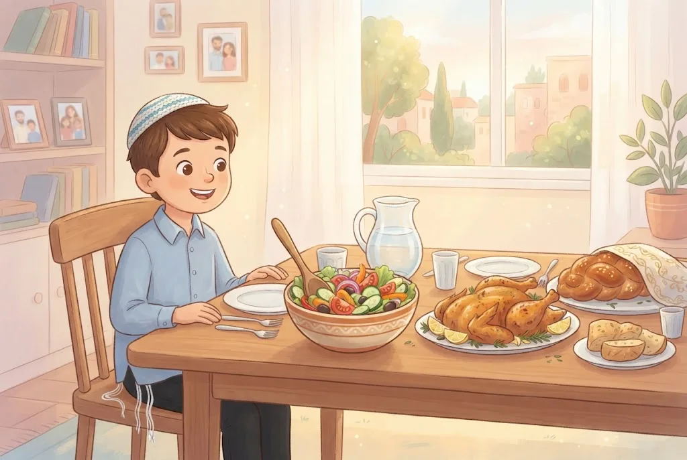
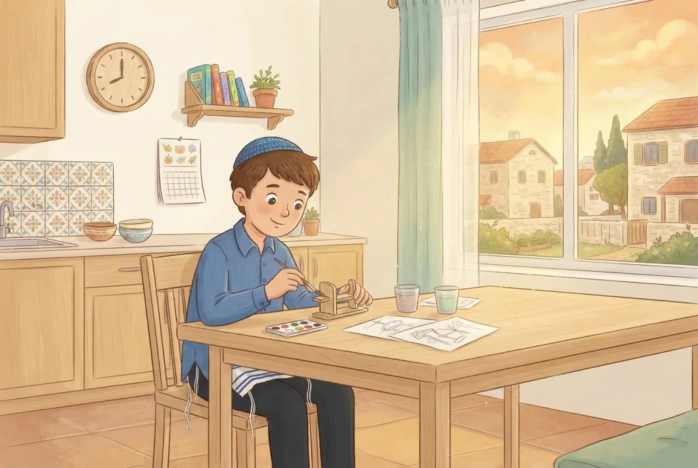

🪥אַחֲרֵי חָלָב
מִי שֶׁאָכַל מַאֲכָל חֲלָבִי וְרוֹצֶה לֶאֱכֹל בָּשָׂר – מְנַקֶּה אֶת פִּיו: אוֹכֵל מַשֶּׁהוּ מוּצָק, כְּמוֹ לֶחֶם אוֹ פְּרִי, וְשׁוֹתֶה. צִחְצוּחַ שִׁנַּיִם וּשְׁטִיפַת הַפֶּה – טוֹבִים עוֹד יוֹתֵר. וּבוֹדְקִים שֶׁהַיָּדַיִם נְקִיּוֹת.
אַחֲרֵי גְּבִינָה קָשָׁה, לְפִי רֹב הַפּוֹסְקִים – כְּמוֹ אַחֲרֵי גְּבִינָה רְגִילָה. וְיֵשׁ מְהַדְּרִים לְהַמְתִּין אַחֲרֶיהָ שָׁעָה לִפְנֵי בָּשָׂר. וְרַבִּים מִיּוֹצְאֵי אַשְׁכְּנַז מַמְתִּינִים שֵׁשׁ שָׁעוֹת אַחֲרֵי גְּבִינָה קָשָׁה שֶׁהִתְיַשְּׁנָה זְמַן רַב.
💛 אַהֲבַת הַשֵּׁם: שְׁטִיפַת הַפֶּה הִיא דָּבָר קָטָן, אֲבָל הִיא מַפְרִידָה בֵּין אֲרוּחָה לַאֲרוּחָה. גַּם בְּמַעֲשִׂים קְטַנִּים אָנוּ מְקַדְּשִׁים אֶת הַחַיִּים.
⏳אַחֲרֵי בָּשָׂר – מַמְתִּינִים
אַחֲרֵי בָּשָׂר לֹא מַסְפִּיק לְנַקּוֹת אֶת הַפֶּה – צָרִיךְ לְהַמְתִּין, כִּי טַעַם הַבָּשָׂר חָזָק וְנִמְשָׁךְ זְמַן רַב, וַחֲתִיכוֹת מִמֶּנּוּ נִתְקָעוֹת בֵּין הַשִּׁנַּיִם.
כַּמָּה מַמְתִּינִים? יוֹצְאֵי סְפָרַד וְרֹב יוֹצְאֵי אַשְׁכְּנַז – שֵׁשׁ שָׁעוֹת. יֵשׁ מִיּוֹצְאֵי אַשְׁכְּנַז שֶׁנּוֹהֲגִים שָׁלֹשׁ שָׁעוֹת, וּמְעַטִּים – שָׁעָה אַחַת. כָּל אֶחָד שׁוֹמֵר עַל מִנְהַג מִשְׁפַּחְתּוֹ, וּמִי שֶׁאֵין לוֹ מִנְהָג – נוֹהֵג שֵׁשׁ שָׁעוֹת, כְּרֹב יִשְׂרָאֵל.
💛 אַהֲבַת הַשֵּׁם: כָּל הַמִּנְהָגִים נוֹסְדוּ עַל יְדֵי גְּדוֹלֵי תּוֹרָה, וְאָנוּ מְכַבְּדִים אֶת כֻּלָּם. הַהַמְתָּנָה מְלַמֶּדֶת אוֹתָנוּ סַבְלָנוּת – וְהַסַּבְלָנוּת הַזֹּאת הִיא מַתָּנָה שֶׁאָנוּ נוֹתְנִים לַה׳.
🔀שְׁנֵי מִנְהָגִים – וּשְׁנֵיהֶם כַּהֲלָכָה
כַּמָּה שָׁעוֹת מַמְתִּינִים בֵּין בָּשָׂר לְחָלָב? הַסְּפָרַדִּים מַמְתִּינִים שֵׁשׁ שָׁעוֹת. גַּם רֹב הָאַשְׁכְּנַזִּים מַמְתִּינִים שֵׁשׁ שָׁעוֹת, וְיֵשׁ אַשְׁכְּנַזִּים שֶׁנּוֹהֲגִים לְהַמְתִּין שָׁלֹשׁ שָׁעוֹת, וּמְעַטִּים – שָׁעָה אַחַת.
לָמָּה שֵׁשׁ? כִּי בִּימֵי חֲכָמִים עָבְרוּ לְפָחוֹת שֵׁשׁ שָׁעוֹת בֵּין אֲרוּחַת הַבֹּקֶר לַאֲרוּחַת הָעֶרֶב. הַמַּמְתִּינִים שָׁעָה – רוֹצִים שֶׁיִּהְיוּ שְׁתֵּי סְעוּדוֹת נִפְרָדוֹת. וּמִי שֶׁאֵין לְמִשְׁפַּחְתּוֹ מִנְהָג אַחֵר – מַמְתִּין שֵׁשׁ שָׁעוֹת, כְּרֹב יִשְׂרָאֵל.
💛 אַהֲבַת הַשֵּׁם: כָּל הַמִּנְהָגִים נוֹסְדוּ עַל יְדֵי גְּדוֹלֵי תּוֹרָה. לֹא מְשַׁכְנְעִים חָבֵר לְשַׁנּוֹת אֶת מִנְהַג מִשְׁפַּחְתּוֹ – כָּל אֶחָד שׁוֹמֵר עַל מִנְהָגוֹ בְּאַהֲבָה, וְכֻלָּנוּ עוֹבְדִים אֶת אוֹתוֹ ה׳.
🥔טַעַם בָּשָׂר וּשְׁאֵרִיּוֹת בַּשִּׁנַּיִם
מִי שֶׁאָכַל תַּפּוּחֵי אֲדָמָה אוֹ מָרָק שֶׁהִתְבַּשְּׁלוּ עִם בָּשָׂר – נוֹהֵג כְּמוֹ אַחֲרֵי בָּשָׂר, כִּי יֵשׁ בָּהֶם טַעַם בָּשָׂר. אֲבָל סָלָט שֶׁרַק לָקְחוּ מִמֶּנּוּ בְּמַזְלֵג בְּשָׂרִי, וְאֵין בּוֹ טַעַם בָּשָׂר – אֵין אוֹכְלִים אוֹתוֹ עִם חָלָב, אֲבָל מִיָּד אַחֲרָיו מֻתָּר לֶאֱכֹל חָלָב.
מִי שֶׁמָּצָא בָּשָׂר תָּקוּעַ בֵּין הַשִּׁנַּיִם – מוֹצִיא אוֹתוֹ. וְאִם מְצָאוֹ אַחֲרֵי זְמַן הַהַמְתָּנָה – מוֹצִיא אוֹתוֹ, מְנַקֶּה אֶת הַפֶּה, וּמֻתָּר לוֹ לֶאֱכֹל חָלָב מִיָּד.
💛 אַהֲבַת הַשֵּׁם: הַהֲלָכָה מַבְחִינָה בְּדִיּוּק בֵּין טַעַם אֲמִתִּי לְבֵין מַרְאִית בִּלְבַד. מִי שֶׁלּוֹמֵד אֶת הַהֶבְדֵּלִים הָאֵלֶּה, שׁוֹמֵר עַל הַמִּצְוָה בְּשָׂכֵל וּבְשִׂמְחָה.
🔀גְּבִינָה קָשָׁה – שְׁנֵי מִנְהָגִים
גְּבִינָה קָשָׁה, שֶׁהִתְיַשְּׁנָה זְמַן רַב, טַעְמָהּ חָזָק וְנִמְשָׁךְ, וַחֲתִיכוֹת מִמֶּנָּה עֲלוּלוֹת לְהִתָּקַע בֵּין הַשִּׁנַּיִם – כְּמוֹ בָּשָׂר. לָכֵן רַבִּים מִיּוֹצְאֵי אַשְׁכְּנַז נוֹהֲגִים לְהַמְתִּין אַחֲרֶיהָ שֵׁשׁ שָׁעוֹת לִפְנֵי בָּשָׂר, וְיֵשׁ שֶׁמַּחְמִירִים כָּךְ בְּכָל גְּבִינָה צְהֻבָּה.
לְפִי רֹב הַפּוֹסְקִים, וְכָךְ פּוֹסֵק הָרַב מֶלָמֵד – אַחֲרֵי גְּבִינָה קָשָׁה מְנַקִּים אֶת הַפֶּה וְאוֹכְלִים בָּשָׂר, כְּמוֹ אַחֲרֵי גְּבִינָה רְגִילָה. וְהָרוֹצִים לְהַדֵּר מַמְתִּינִים שָׁעָה.
💛 אַהֲבַת הַשֵּׁם: כָּל מִשְׁפָּחָה שׁוֹמֶרֶת עַל מִנְהַג אֲבוֹתֶיהָ, וְכֻלָּם רוֹצִים אוֹתוֹ דָּבָר: לְהַרְחִיק אֶת הַבָּשָׂר מִן הֶחָלָב, כְּפִי שֶׁצִּוָּה ה׳.
👦חִנּוּךְ הַיְּלָדִים
מִצְוָה לְחַנֵּךְ אֶת הַיְּלָדִים לְהַמְתִּין בֵּין בָּשָׂר לְחָלָב, אֲבָל לֹא בְּדֶרֶךְ שֶׁמְּצַעֶרֶת אוֹתָם אוֹ פּוֹגַעַת בִּבְרִיאוּתָם. לָכֵן, בְּמִשְׁפָּחוֹת שֶׁנּוֹהֲגוֹת שֵׁשׁ שָׁעוֹת, מַרְגִּילִים בְּהַדְרָגָה: בְּנֵי שָׁלֹשׁ עַד חָמֵשׁ – כְּשָׁעָה, בְּנֵי חָמֵשׁ אוֹ שֵׁשׁ – כְּשָׁלֹשׁ שָׁעוֹת, וּמִגִּיל תֵּשַׁע אוֹ עֶשֶׂר – כְּשֵׁשׁ שָׁעוֹת כְּשֶׁאֶפְשָׁר.
אָסוּר לָתֵת לְיֶלֶד מַאֲכָל אָסוּר. וְהוֹרִים שֶׁרוֹאִים אֶת יַלְדָּם אוֹכֵל מַאֲכָל אָסוּר – מַפְרִישִׁים אוֹתוֹ מִמֶּנּוּ.
💛 אַהֲבַת הַשֵּׁם: שְׁנוֹת הַיַּלְדוּת הֵן זְמַן שֶׁל אִמּוּן, צַעַד אַחַר צַעַד. כָּל שָׁעָה שֶׁיֶּלֶד מַצְלִיחַ לְחַכּוֹת הִיא הֲכָנָה לְבַר הַמִּצְוָה שֶׁלּוֹ.
🕊️חֹק שֶׁל קְדֻשָּׁה
אִסּוּר בָּשָׂר בְּחָלָב הוּא מִן הַחֻקִּים – מִצְווֹת שֶׁאֵין אָנוּ מְבִינִים אֶת טַעְמָן, וּמְקַיְּמִים אוֹתָן כִּי ה׳ צִוָּה. בְּכָל זֹאת אֶפְשָׁר לִלְמֹד מֵהֶן רַעֲיוֹנוֹת: יֵשׁ שֶׁכָּתְבוּ שֶׁאֵין רָאוּי לְהִתְאַכְזֵר וְלָקַחַת מִן הַבְּהֵמָה גַּם אֶת חֲלָבָהּ וְגַם אֶת בְּשָׂרָהּ, וּלְבַשֵּׁל אוֹתָם יַחַד.
עוֹד הֶסְבֵּר: הַבָּשָׂר הוּא מַאֲכָל כָּבֵד שֶׁל מְבֻגָּרִים, וְהֶחָלָב – מַאֲכָל קַל שֶׁל תִּינוֹקוֹת. כָּל אֶחָד טוֹב בִּמְקוֹמוֹ, וְאֵין לְעָרֵב בֵּינֵיהֶם.
💛 אַהֲבַת הַשֵּׁם: כְּשֶׁאָנוּ מְחַכִּים בְּסַבְלָנוּת וּמַפְרִידִים בֵּין הַכֵּלִים רַק כִּי ה׳ צִוָּה, אָנוּ מַרְאִים לוֹ אֱמוּנָה וְאַהֲבָה. כָּךְ כָּל אֲרוּחָה בַּבַּיִת נַעֲשֵׂית מָקוֹם שֶׁל קְדֻשָּׁה.
🧠 בְּדֹק אֶת עַצְמְךָ
בַּאֲרוּחַת בָּשָׂר אָכַל אֵיתָן רַק סָלָט, שֶׁלָּקְחוּ מִמֶּנּוּ בְּמַזְלְגוֹת בְּשָׂרִיִּים. מָתַי מֻתָּר לוֹ לֶאֱכֹל גְּבִינָה?
💡 הַסָּלָט נֶחְשָׁב "בְּחֶזְקַת בְּשָׂרִי", וְלָכֵן לֹא אוֹכְלִים אוֹתוֹ עִם חָלָב. אֲבָל אֵין בּוֹ טַעַם בָּשָׂר, וּמִיָּד אַחֲרָיו מֻתָּר לֶאֱכֹל חָלָב.
בְּשַׁבָּת אָכַל יוֹנָתָן מִן הַחַמִּין רַק תַּפּוּחֵי אֲדָמָה, שֶׁהִתְבַּשְּׁלוּ עִם הַבָּשָׂר. מָה דִּינוֹ?
💡 תַּבְשִׁיל שֶׁהִתְבַּשֵּׁל עִם בָּשָׂר – יֵשׁ בּוֹ טַעַם בָּשָׂר. לָכֵן נוֹהֲגִים לְהַמְתִּין אַחֲרָיו כְּמוֹ אַחֲרֵי בָּשָׂר עַצְמוֹ.
אַחֲרֵי שֶׁעָבַר זְמַן הַהַמְתָּנָה, מָצָא אֵלִיָּה חֲתִיכַת בָּשָׂר קְטַנָּה בֵּין שִׁנָּיו. מָה הוּא עוֹשֶׂה?

💡 מוֹצִיאִים אֶת הַבָּשָׂר מִן הַפֶּה, מְנַקִּים אֶת הַפֶּה – בְּמַאֲכָל מוּצָק וּשְׁתִיָּה אוֹ בְּצִחְצוּחַ שִׁנַּיִם – וּמִיָּד מֻתָּר לֶאֱכֹל חָלָב. אֵין צֹרֶךְ לְהַתְחִיל לְהַמְתִּין שׁוּב.
📚 עוֹד חָמְרֵי לִמּוּד עַל הֲלָכָה – חִנָּם, בַּמַּאֲגָר הַקּוֹל הַחֲמִישִׁי:
kol-toda.co.il/halacha
הַמַּאֲגָר הַמָּלֵא: kol-toda.co.il
הַמַּאֲגָר הַמָּלֵא: kol-toda.co.il